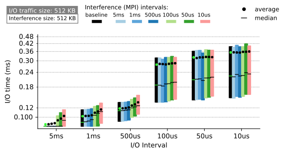
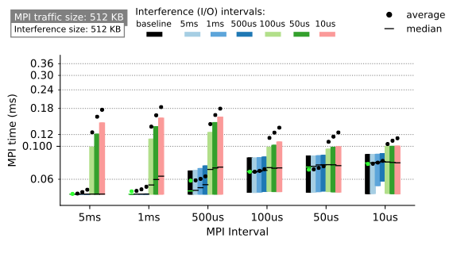

MPI vs. I/O Traffic Interference on Fat-tree Networks
Interference due to resource contention over the network can be a major issue for jobs whose performance depend on efficient inter-process communication and/or I/O operations. To understand the interaction of these two types of communication sources, the performance characteristics of MPI and I/O traffic on a fully provisioned fat-tree network were investigated. The investigations were done using CODES-based simulations with synthetics traffic patterns that are representative of real HPC workload traffic patterns. The differences in the performance trends exhibited by the MPI and I/O traffic with and without interference were studies to reveal their sensitivity to interference.

The characterization of the I/O-MPI interference on fat-tree network proves that I/O traffic is less sensitive to interference than MPI traffic. This is because the network congestion caused by high-intensity I/O workloads negatively affects I/O performance and renders the interference from MPI traffic inconsequential. Nevertheless, the results show that intensive MPI jobs can slow the performance of the lowest-intensity I/O traffic that was studied by up to 1.9X. For a more typical mixed workload on modern HPC system, the I/O job experiences 18% slowdown. MPI traffic does not suffer as badly from self-congestion and is more sensitive to the effect of I/O interference. The largest slowdown for MPI traffic was 7.6X.
For I/O traffic, we identified the presence of I/O-congestion threshold in various scenarios, i.e., the point at which the frequency of I/O request is so high that I/O packets congest the network and degrades its own performance more severely than interference from MPI. This threshold varies based on the size of the request and the scale of the I/O job, and it was discovered to be an important cause of both I/O performance slowdown and MPI performance slowdown.